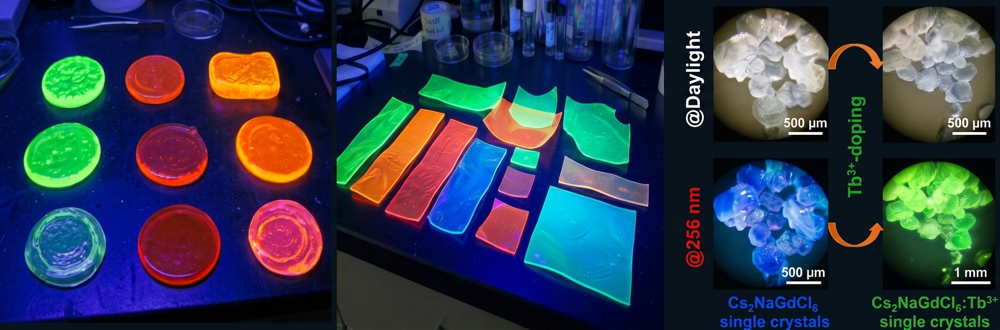
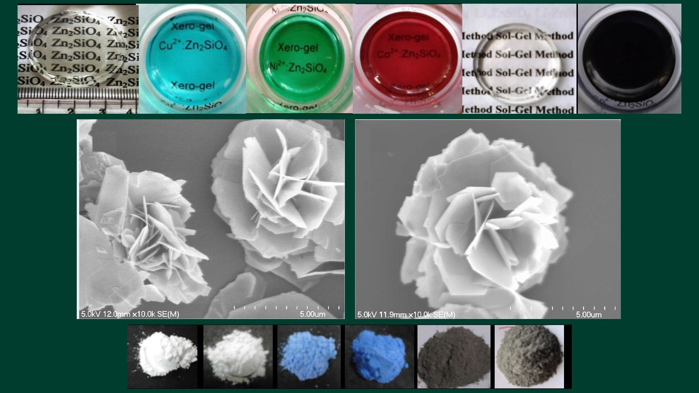
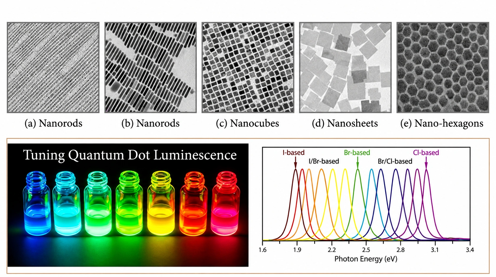
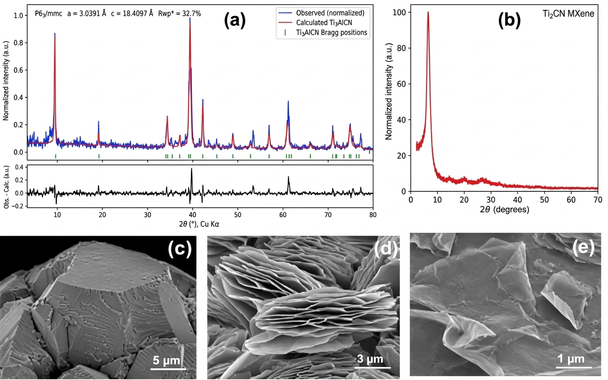

About Me
I’m Naresh Varnakavi (also published as Varnakavi Naresh), a materials scientist with a PhD in photonic materials and about ten years of postdoctoral research across the US, South Korea, and China. I specialize in synthesizing optical glasses, glass-ceramics, crystals, polymers, perovskite nanomaterials, quantum dots, and MAX phases/MXenes for applications in solid-state lighting, displays, X-ray detection and imaging, energy storage and conversion, and environmental remediation. My core strength is controlling synthesis conditions and surface chemistry to tailor material properties. My approach combines wet-chemical and high-temperature synthesis with spectroscopy, diffraction, and microscopy to understand structure–property relationships and improve material performance.


Phosphors and Solgel/xerogel materials



